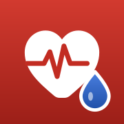

隱私權說明
血壓血糖手冊 最後更新：2026 年 11 月 24 日
血壓血糖手冊是一個給家人自己用的免費網頁，用來記錄血壓和血糖。我們把它設計成：您的紀錄只屬於您。
紀錄存在哪裡
- 您輸入的血壓、血糖、時間和稱呼，只存在您手機瀏覽器的本機儲存空間（IndexedDB）。
- 這個網頁沒有自己的伺服器或資料庫，開發者看不到、也收不到您的任何紀錄。
- 四碼驗證碼只以加密雜湊值存在您的手機上，用來當作螢幕鎖。
Google 雲端硬碟備份（自行選擇）
- 只有在您按下「連接我的 Google 雲端硬碟」並同意後，才會使用這個功能。
- 本網頁只申請
drive.file權限：只能建立和讀寫它自己建立的備份檔（檔名為「血壓血糖手冊備份-您的代碼.json」），無法查看或修改您雲端硬碟裡的其他檔案。 - 備份檔存在您自己的 Google 雲端硬碟，直接從您的手機傳送到 Google，不經過任何其他伺服器。
- 本網頁不會讀取您的姓名、Email、聯絡人或其他 Google 帳號資料。
- 您可以隨時在「設定」中按「中斷連接」，或到 Google 帳戶的第三方存取權 移除授權。已存在雲端硬碟裡的備份檔由您自行保留或刪除。
匯出與分享
「匯出備份檔」和「匯出 Excel（CSV）」只會在您的手機上產生檔案，要存到哪裡、傳給誰，由您自己決定。
不做的事
- 不使用廣告、追蹤或分析工具。
- 不出售、不分享、不轉移您的資料給任何人。
- 從 Google API 取得的資料，只用來為您備份和還原紀錄，並遵守 Google API 服務使用者資料政策（包含「有限使用」規定）。
刪除資料
在「設定」按「刪除這支手機上的資料」，就會清除手機上的所有紀錄。雲端硬碟裡的備份檔，請到 Google 雲端硬碟自行刪除。
聯絡我們
有任何問題，請寄信到 pinlie325@gmail.com。